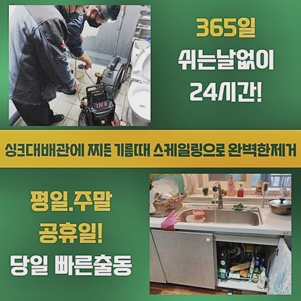
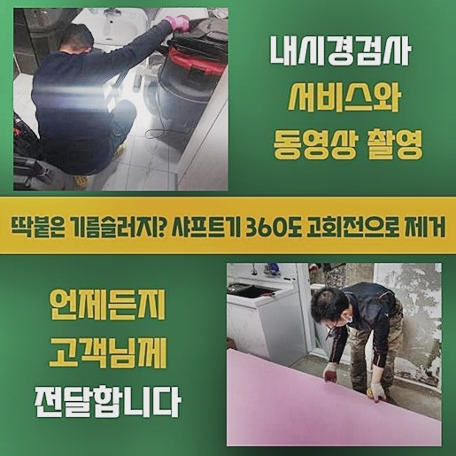
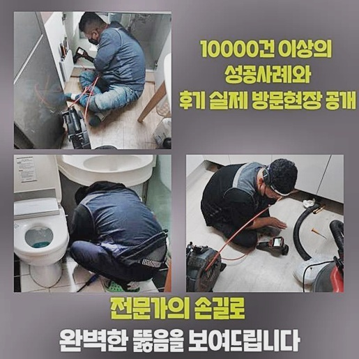
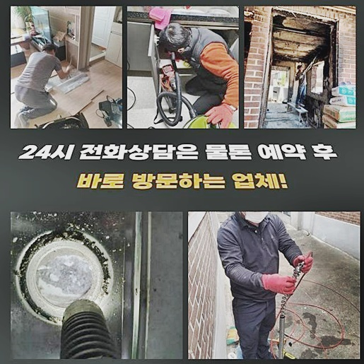
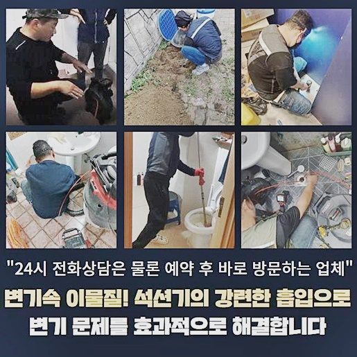
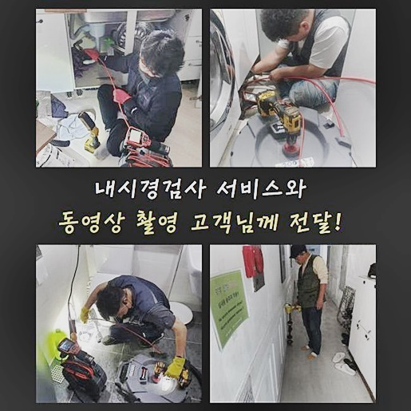

🏠 산본동싱크대배수관역류 궁내동 하수구뚫는비용 배관공사
용인시 처인구 배관막힘 전문 시공 후기

📋 작업 개요
- 위치: 용인시 처인구, 수원시 영통구, 화성시 동탄
- 서비스 유형: 배관막힘, 배관수리, 고압세척, 내시경점검
- 작업 일시:
- 업체명: 하수구수사대 (010-5615-2118)
🔍 문제 상황
산본동싱크대배수관역류 궁내동 하수구뚫는비용 배관공사
막힘 현상이 발생하는 징후와 수준은 건축물의 구조나 기능에 따라 다르게 나타날 수 있어요
필연적으로 가정집과 비교하면 식당 카페 등 상업 시설에서 배수관 막힘이 악화될 수 밖에 없어요
그렇지만 건축물의 완공 시점이나 배관 케어를 해온 방식에 따라 차이점은 생기기 때문에 전부 같다고 안내하기는 어렵습니다
따라서 여러 상가에서 함께 막힘현상이 나타났거나 빈번히 현상이 생길 때는 반드시 전문배관기사를 이용해 근원을 찾아내고 문제점을 해소해야 하죠
금일 알려드릴 저희의 베테랑이 도착한 장소도 상가 빌딩에서 일어난 문제였죠
친구를 통하여 우리 기사님을 추천 받았다 들었는데 계속해서 막힘 현상이 생기니 전문적인 방법으로 해결할 수 있는 전문기사를 찾고 계셨다고 하시더라구요
기사님이 방문해서 현장의 상황을 살펴보니 빌딩 안에 입주한 여러 매장에서 일제히 물길이 막히고 있는 현상이 나타나고 있었죠
상가건물이라서 영업중인 매장들에서 물길이 막혔거나 역류하는 현상이 진행되고 있는 상태였습니다
그러나 이런 배수로 막힘은 뜬금없이 나타나는게 아니라서 문제가 되었습니다

🔎 원인 분석
💡 전문가 진단: 정밀 진단 장비를 사용하여 슬러지의 고착 여부를 판명하고 타격/세척 작업을 실시했습니다.
시작된 후에는 현상들이 심각하며 화장실 막힘현상도 심각하여 뚫기 위해서는 확실한 해결안을 강구해야하는 상황이 되었습니다
고객께서는 다양한 사례를 미리 찾아보셨는지 하수배관막힘을 처리하는 저희기사님에게 배관 고압 물세척을 실행하면 안되냐고 문의하셨어요
고압세척기구는 찰나에 매우 높은 압력을 사용해 다량의 물을 배수관으로 넣어서 하수배수관로 안쪽에 위치한 막힌 불순물을 배출할 수 있는 장비입니다
따라서 문제현상에 적절하게 이용하면 신속하게 막힘이슈를 해결하는 것은 맞습니다
그렇지만 모든 곳에 고압세척기기를 적용할 수 있는 것은 아니란 사실을 기억해야합니다
고압세정기는 압력을 끌어올릴 수 있는 동력엔진과 연결해야 해서 작업현장으로 적절하지 않은 장소라면 활용하기가 곤란합니다
또한 연립이나 아파트같은 주거지에서는 하수파이프 고압수 클리닝보다는 오염물질을 흡수하는 석션시공이나 플렉스샤프트기계를 활용한 분해와 클리닝 방안들이 효율이 좋습니다
하지만 문제의 상가에서 상당한 시일동안 막힌상태가 수회에 걸쳐 발생했어도 철저한 관리를 해오지 않아서 막힘이 굉장히 심각해보였습니다
배수관로 안쪽에 기름뭉치들이 계속해서 모이게 되면 이를 해결하는 것 또한 쉽지 않지만 배수구에 큰 악영향이 발생할 수 있는 것이 더 심각한 문제입니다
식당 또는 오일을 이용해 조리하는 가게에서 방출되는 기름 덩어리와 기름잔여물들은 장기간 배수관 안쪽에서 뭉치면 그 크기나 중량이 증가하는 사례가 흔해요
그래서 슬러지덩어리가 무더기로 누적된다면 배수관로가 무겁게 되어서 결합부위가 느슨해져서 가라앉는 증상들이 발생될 가능성이 있습니다

🔧 작업 과정
먼저 배수구의 내 외관을 철저하게 조사하여 고압세척작업이 시행될수 있는지 여부를 확인하고 하수도 세척작업을 진행했습니다
결합지점을 세심히 살펴보니 배수파이프가 점차 처지는 증상도 확인되었지만 해당현상은 불순물을 제거하게 되면 다시 돌아올 것으로 판단한 바 늘어진 위치만 금속밴드로 고정했어요
이렇게 사전에 선행 작업을 진행하지 않고 고압수를 쓰게 된다면 배수관로 깨짐이 생길 수 있으므로 더 심각한 문제가 나타날 수 있어요
고정하는 작업들을 완료한 후 이젠 심도있는 세척작업을 시작해야하기 때문에 하수도 내시경카메라를 투입할 준비를 마쳤습니다
공동관로가 길다랗게 연결된 상황이었기에 내시경 카메라 장치로 배수관로 속을 확인하는 시간도 길게 소요되었는데요
그럼에도 배수관로 작업중에서 핵심적인 절차는 정밀한 분석을 통해 문제요인을 발견하는 것이므로 내시경 탐색 작업을 대충해서는 안돼요
고압세정작업을 청결하게 하기 위해 하수파이프 내시경장비를 배관 깊숙한 곳까지 들여보내 공용파이프를 세밀히 조사했어요
배수파이프 내 보수작업이 올바로 되지 않았기 때문에 깊은 내부까지 기름덩어리가 가득차 있는 모습을 발견할 수 있었어요
하수배관을 수리하는 저희 배관수리팀은 이정도의 수준이면 고압세척기를 적용해서 정비를 하는 것이 옳다는 생각이 들었습니다
이와 같은 상가 지하공간에 위치한 공용파이프는 길이가 긴 사례가 많으므로 중간쯤의 위치에서 먼저 세척한 다음 보강처리를 하는 것이 효과적입니다
이런 방식으로 정밀히 배수파이프 내의 문제나 연결 상태를 확인하고 나서 시공을 해야 정확하게 막힘이슈를 처리할 수 있습니다
이런 방식이 아닌 단편적인 방법으로 장애상황을 해소하면 상태는 진전되지 않고 다시금 배관막힘이 일어나는 문제가 되풀이 됩니다
이번엔 고압수 세척장비를 활용해서 적극적으로 하수배관 청소를 진행할 시점입니다
문제의 근원이 되는 부위를 파악했으므로 고압세척작업이 말끔하게 끝나게되면 마음 놓고 수도를 이용할 수 있게 될 것 입니다
고압세정 과정은 순간적으로 상당한 양의 물이 물줄기가 배수파이프 내로 흘러 들어가기에 시공자의 실력이 필요한 작업입니다
고압수 클리닝을 실시하는 중간 내시경장비를 활용해서 청결하게 불순물이 제거되는지도 점검했어요
고압 물세척을 마무리하고 내시경카메라로 내부 상황들을 살펴본 뒤 배수 테스트까지 수차례 수행했는데요 막힘이슈 없이 투입한 물이 순조롭게 빠지는 모습들을 통수검사로 파악했습니다


✅ 작업 완료
하수관로 막힘을 담당하고 있는 저희 기사님은 고객님에게 구체적으로 현장사항을 말씀드리고 중앙부근 수리를 진행한 지점도 마무리 한 다음 고압 세척을 끝낼 수 있었어요
이렇게 상가에서 막힘 현상이 발생하면 어려운 상태가 되기 때문에 빠른 조치가 매우 중요합니다
이젠 많은 염려나 걱정을 뒤로하고 저희업체에 연락해주세요
미미한 증상들을 소홀히 대하신다면 더욱 심각한 이슈로 발전될 수 있으므로 확인하는대로 빠르게 대처해드리겠습니다
그 어떤 수리공보다 전문적이고 신속하게 물물막힌 배관을 해결해드리겠습니다



⚠️ 하수구 배관 막힘 예방 및 관리 가이드
- ✅ 머리카락, 비닐, 물티슈 등 물에 분해되지 않는 이물질은 절대 흘려보내지 마세요.
- ✅ 기름기 많은 식기는 설거지 전 키친타올로 먼저 기름때를 닦아내세요.
- ✅ 주기적으로 배수구에 뜨거운 물을 가득 부어주어 유지방 고착을 방지하세요.
- ✅ 작업 후 1년 이내 재발 시 무상 A/S 보증 서비스를 제공합니다.
💡 핵심 정리
- 확실한 장비 작업(내시경 점검 및 샤프트 스케일링)으로 원인을 뿌리 뽑습니다.
- 작업 후 1년 이내에 동일한 부위 재발 시 100% 무상 A/S 서비스를 보장합니다.
- 서울 · 경기 · 인천 전 지역에 24시간 언제든 긴급 출동할 수 있도록 항시 대기 중입니다.
❓ 자주 묻는 질문 (FAQ)
🚨 용인시 처인구 배관막힘 문제로 고민이신가요?
정확한 원인 진단과 확실한 시공으로 재발 없는 해결을 약속드립니다.
24시간 긴급 출동 | 서울 · 경기 · 인천 전지역 | 1년 내 재발 시 무상 A/S